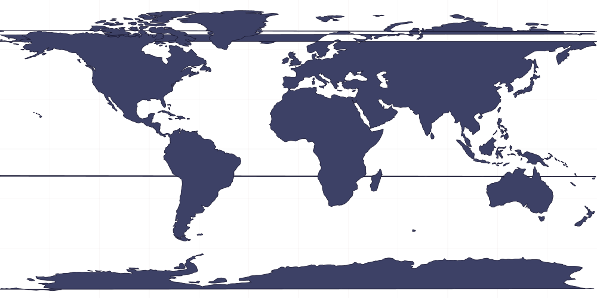

THE FIELD GUIDE
Every flag,
one atlas.
Browse every flag in the FlagRover world. The ones you have discovered glow in full color — the rest are still waiting for their stamp.
EXPLORE THE MAP
Where in the world?
Discovered
Undiscovered

Hover a marker to reveal what you have found. Click one to jump to its entry below.